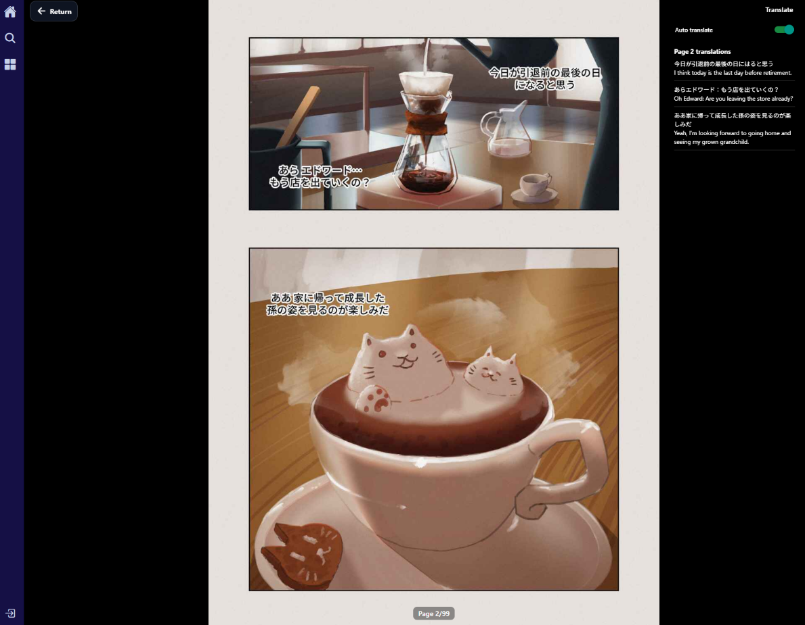
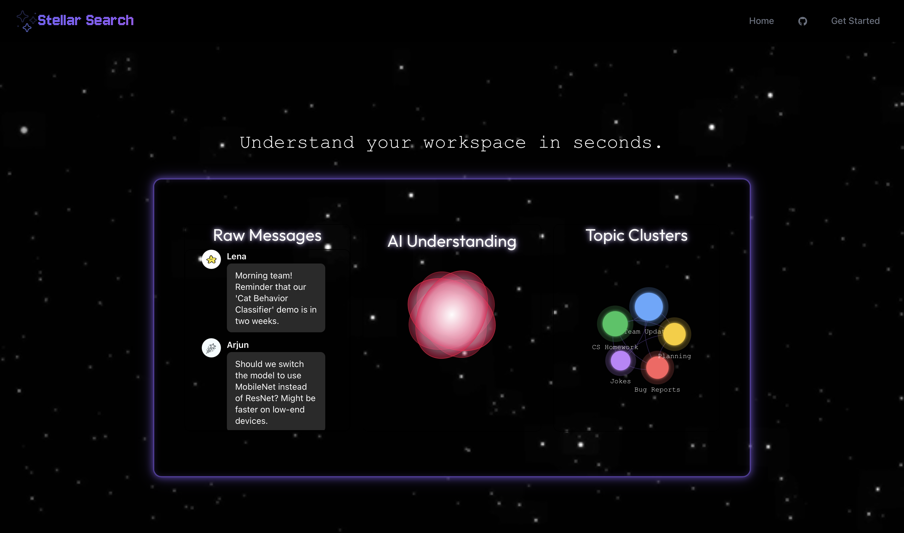
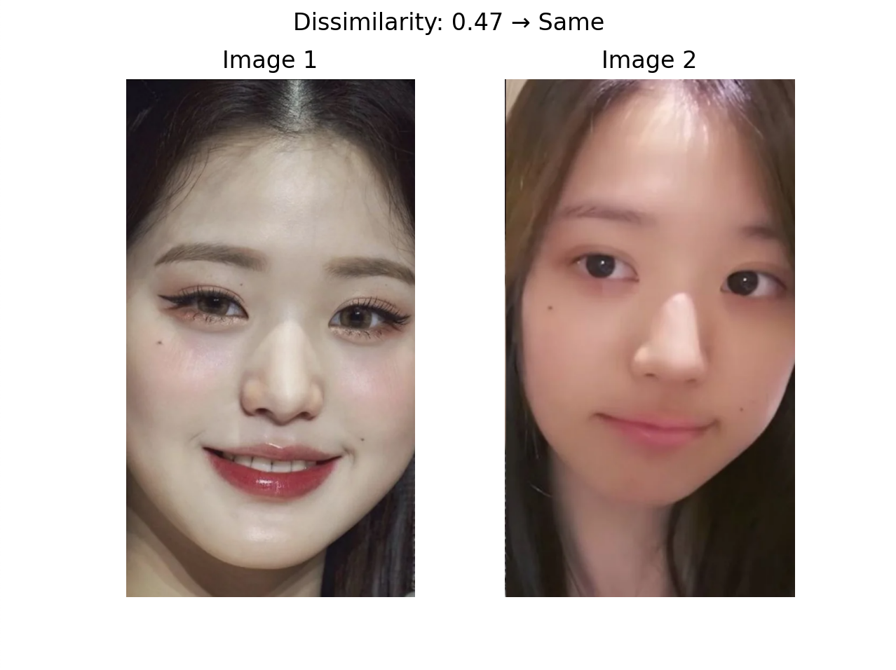

Hi, I'm Jessica, a recent Computer Science graduate from Hunter College with a minor in Mathematics. I'm passionate about full-stack web development and machine learning, and I enjoy building applications that combine intuitive user experiences with AI. My projects have explored computer vision, natural language processing, and modern web technologies, and I'm always excited to tackle new technical challenges and continue growing as a software engineer.
chenjessicany@gmail.com
(929)363-8020

Jun 2026 - Present
Chrome Extension API, Javascript, Python, Hugging Face
Manga Translation Extension is a Chrome extension with a FastAPI backend that uses OCR and machine translation to translate Japanese manga text and display English translations directly over the original panels.
Feb 2026 - May 2026
React Native + Expo, FastAPI, Supabase, Hugging Face
Manglify is an AI-powered manga reader that translates Japanese manga using OCR and machine translation. Users can browse manga, receive AI-generated translations, and read translated pages through a modern React Native interface.
Oct 2025 - Nov 2025
React + Typescript, ExpressJS, PostgreSQL, Firebase
Built a full-stack calendar scheduling web app using React/Next.js and Express, allowing students to create, manage and view events through a centralized platform.
Oct 2025 - Nov 2025
React, Express.js, MongoDB, Hugging Face
Developed a full-stack digital journaling web application designed to help users track daily emotions and reflect on their experiences through an interactive calendar interface for creating, editing, and organizing journal entries

Oct 2025 - Nov 2025
React, Python, Supabase, Gemini API
Stellar Search goes beyond standard keyword-based filtering used by Slack and Discord, allowing users to search for message history through context clustering.

May 2025
Python, PyTorch, OpenCV, Matplotlib, torchvision, NumPy, Pillow
FaceOff is a PyTorch-based Siamese neural network using triplet loss to improve facial recognition feature consistency across altered and unaltered faces with makeup
Feb 2024
Python, PyTorch, OpenCV, Matplotlib, torchvision, NumPy, Pillow
FaceOff is a PyTorch-based Siamese neural network using triplet loss to improve facial recognition feature consistency across altered and unaltered faces with makeup